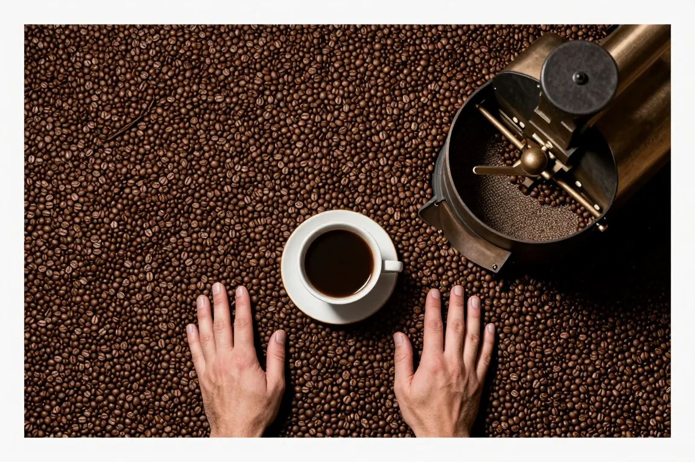

nett · 2006–now · også: Impact-meme, Meme med tekst øverst og nederst, Advice Animal
Et kvadratisk foto eller en tegneserie med hvit versaltekst i et tykt svart omriss øverst og nederst. Skriften Impact og formatet spredte seg på forum og 4chan fra 2006.

Kjerneidé
Gjør bildeteksten til bildet: én oppsettlinje øverst, én poenglinje under, i en skrift som er lesbar i alle størrelser.
Designprinsipper
Sett teksten i Impact eller en åpen etterligning (Anton, Oswald 700) i hvite versaler.
Legg til et svart omriss på 3px til 4px per 40px tekst, tegnet utenfor glyfen.
Plasser oppsettlinjen øverst og poenglinjen nederst, hver 5 % til 8 % fra kanten.
Tilpass teksten slik at hver linje fyller 80 % til 95 % av bredden; bryt til en andre linje ved 24 tegn.
Beskjær bildet til et kvadrat eller til 4:3 og la det fylle hele lerretet.
Bruk et bilde med et tydelig ansikt eller en tydelig positur; ingen logo, ingen ramme, ingen ekstra grafikk.
Hold bildetekstene korte: 3 til 8 ord i hver linje.